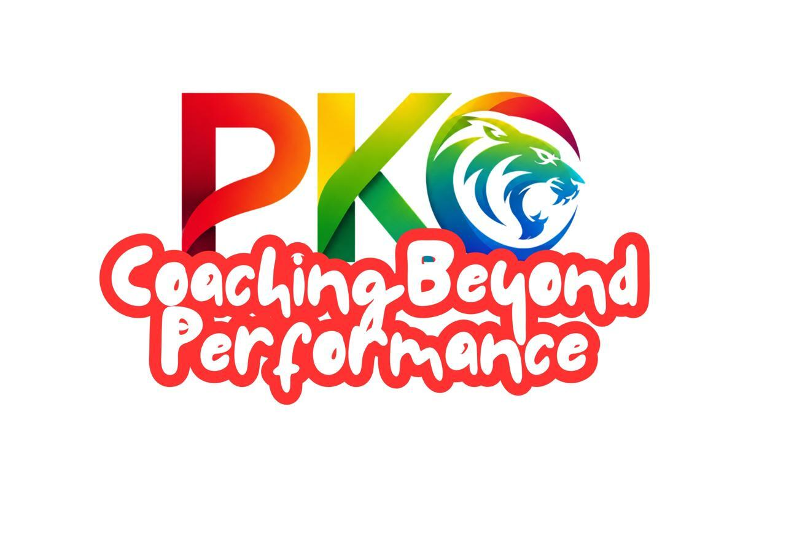

Tentang Prodi
Prodi Pendidikan Kepelatihan Olahraga
Website
Ketua Prodi
Dr. Fegie Rizkia Mulyana, M.Pd., CHt., CNLPC.
Lokasi Kampus
Jl. Siliwangi No. 24, Kelurahan Kahuripan, Kecamatan Tawang, Kota Tasikmalaya, 46115.

Program Studi Pendidikan Kepelatihan Olahraga berkomitmen untuk melahirkan pelatih dan profesional olahraga yang mampu mengintegrasikan sport science, teknologi, kepemimpinan, dan nilai-nilai kemanusiaan untuk menciptakan dampak positif yang berkelanjutan di arena pertandingan, di ruang kelas, dan di tengah masyarakat. Program Studi PKO memaknai sebuah keberhasilan dan pencapaian bukan hanya tentang performa hari ini, tetapi tentang membangun kualitas manusia untuk masa depan.